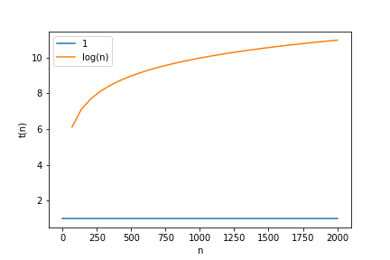
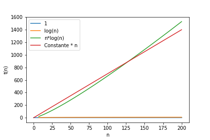
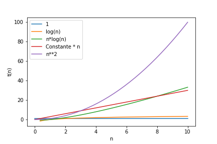
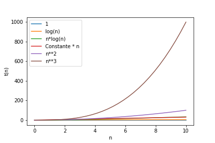
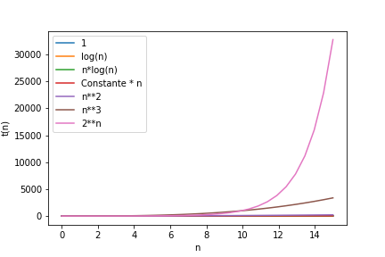
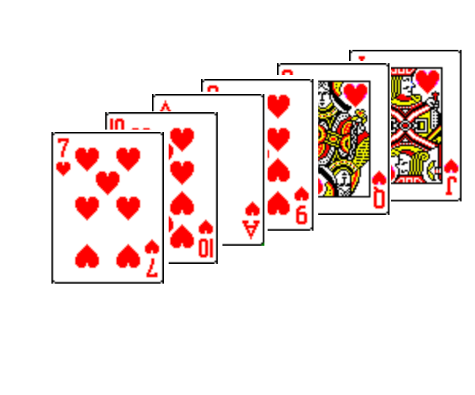
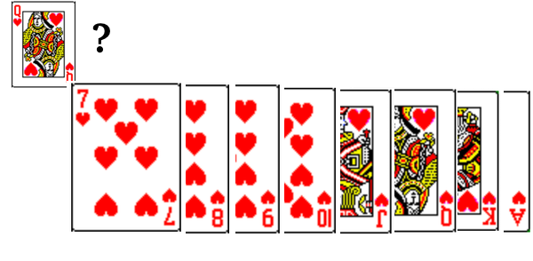
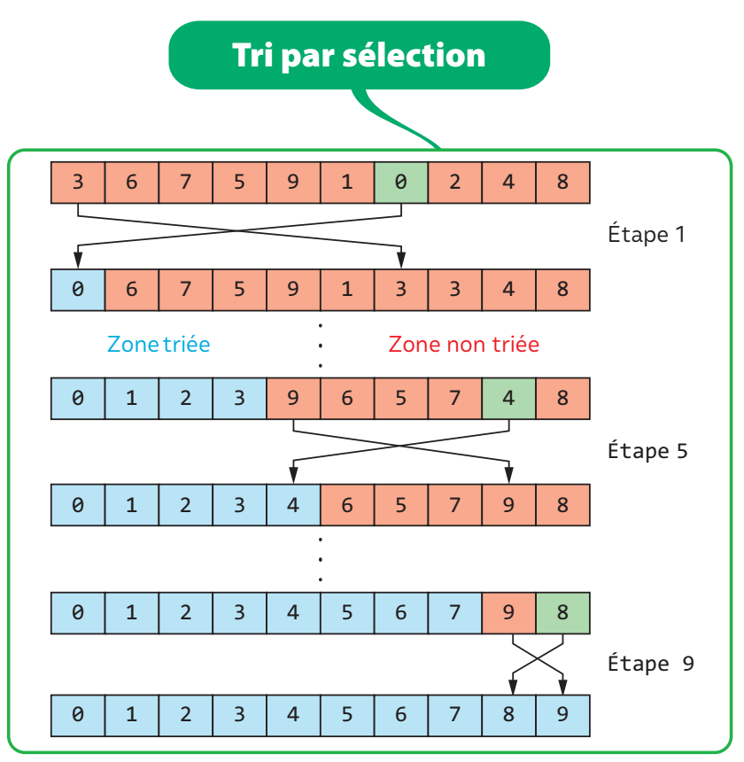

Complexité
Travaux pratiques:
- étude comparée des algorithmes de recherche:
- étude comparée des algorithmes de tri: Lien
- algorithmes de recherche des nombres premiers: Lien Feuille d’exercices en version pdf
Cout spatial et temporel
L’execution d’un algorithme nécessite l’utilisation des ressources de l’ordinateur:
- complexité en temps : temps de calcul pour executer les operations. On supposera qu’il correspond au nombre d’opérations effectuées par le programme.
- complexité spatiale : occupation de la mémoire pour contenir et manipuler le programme et ses données. Peut s’exprimer en nombre de mots mémoires.
Complexité temporelle
C’est une estimation du temps d’execution d’un programme, independamment de la machine. En pratique, cela correspond au nombre d’opérations effectuées par le programme.
Pour evaluer la complexité temporelle, on peut mettre en evidence plusieurs opérations fondamentales. Le temps d’éxecution d’un algorithme resolvant ce genre de problème est toujours proportionnel au nombre de ces opérations :
Pour le tri, par exemple : ces opérations fondamentales sont le nombre de comparaisons entre 2 élements et le nombre de deplacements de ces élements.
Complexité spatiale
Il faut souvent définir une mesure sur les données qui réflète la quantité d’informations contenues. Exemple : nombre de chiffre des nombres, le nombre d’éléments manipulés, dimension d’une matrice, nombre de noeuds d’un graphe… C’est la complexité spatiale.
Evaluer la complexité (temporelle)
Principe
Étant donnée que la durée d’exécution d’un algorithme peut varier entre différentes entrées, on considère généralement la complexité temporelle dans le cas le plus défavorable, qui correspond à la durée maximale.
Par exemple, avec l’algorithme de recherche séquentielle, ce temps correspondrait à trouver l’élément dans la liste comme s’il occupait la dernière position (voir plus loin).
La complexité d’un algorithme sera alors (sauf mention contraire) exprimée sous la forme : O(g(n)). Ce qui correspond à la complexité asymptotique, dans le pire des cas (sa borne supérieure).
En pratique, on ne comptera que les opérations estimées importantes : T(n). Les opérations qui ne changent pas selon les nuances du langage utilisées lors de la programmation (boucle while et boucle for…) mais qui changent selon le problème. Ce nombre d’opérations sera appelé T(n).
On en déduira alors la classe de complexité asymtotique g(n) (voir tableau plus loin). Puis la complexité dans le pire des cas O(g(n)).
Instructions élémentaires T(n)
T(n) est la somme des unités de mesure, comptée pour chaque instruction.
Une unité de mesure peut-être :
- une addition
- une soustraction
- une multiplication, une division, Mod (%), Div
- une opération arithmétique simple (sans appel de fonctions)
- une comparaison, les opérations booléennes (et,ou,non)
- une affectation
- des opérations de lectures et écritures simples
Exemple:
Le programme multiplie devra écrire dans une liste la série de nombres correspondants à la table de multiplication de b. Pour les n premiers termes.
Exemple avec une boucle bornée
Supposons pour cet exemple que seules les opérations multiplier et additionner sont significatives. On compte le nombre de ces opérations pour les fonctions suivantes.
La première étape est d’identifier les séquences dans un algorithme. Si votre algorithme est composé des séquences :
$$T(n) = T(I_1) + T(I_2) + T(I_3) + ...$$il y a 3 séquences I1, I2, I3 :
La séquence I1 contient une seule instruction élémentaires (affectation = ). I3 ne contient pas d’instruction significative. I2 est une séquence comprenant 3 operations :
- opération * pour b * i
- affectation =
- affectation
append
De ce fait :
$$T(n) = 1 + 3\times n$$Boucle non bornée : variant de boucle
Le principe est le même pour une boucle non bornée (non conditionnelle), mais il est moins facile de déterminer le nombre d’itérations de la boucle. Pour ce faire, la méthode classique est d’étudier plus en détails le variant de boucle. On détermine :
- La valeur initiale du variant de boucle ;
- Sa valeur finale ;
- De combien il diminue strictement à chaque étape.
On peut alors en déduire le nombre d’itérations de la boucle.
Exemple : Avec multiplie2, le variant de boucle, c’est i. Sa valeur passe de n - 1 à 0. La boucle est executée n fois. Et le nombre d’instructions significatives dans la boucle est de 2 :
La fonction semble réaliser plus d’opérations que la première implémentation, d’où la petite différence pour la valeur de T(n) avec les deux fonctions precedentes.
Ici, on peut évaluer T(n) = 2 + 5n
Cette différence ne vient que d’une différence des details d’implémentation du même algorithme, et ne doit pas être considérée pour le calcul de la complexité.
g(n): Limite asymptotique en n
Lorsque l’on étudie la complexité d’une fonction ou d’un algorithme, on s’intéressera souvent à son comportement pour de grandes taille du paramètre d’entrée n. Car si pour des données de petite dimension, la qualité de l’algorithme importe peu, pour de grandes tailles de données, la différence de performance peut être énorme. On dit que l’on observe le comportement asymtotique de T(n), c’est à dire pour n qui tend vers de grandes valeurs.
On aura besoin de définir plusieurs niveaux de description:
- T(n), qui représente le nombre d’opérations significatives réalisées par cette fonction : par exemple $T(n) = 2\times n$.
- g(n) est une approximation de T(n). Ici, $g(n) = n$
- La complexité O(g(n)) détermine la classe de complexité de la fonction, dans le pire des cas. Dans le cas de nos 3 fonctions
multiplie, ce sera à chaque fois O(n). La complexité est linéaire.
La petite différence d’implementation de ces 2 fonctions est visible en calculant T(n), mais pas en déterminant g(n) ni O(g(n)).
Règles pour estimer la complexité O(g(n))
Règles
- Poser n = “la taille des paramètres”.
- Enoncer les instructions que vous compterez comme significatives
- définir des blocs d’instructions dans le script
- Ne compter que les instructions essentielles, à partir d’une unité de mesure: noter la somme des instructions élémentaires T(n).
- Pour chacune des boucles du programme, repérer le variant de boucle et calculer le nombre d’itérations : combien de fois on passe dans la boucle.
- Si T(n) contient une somme de termes, conserver uniquement le plus divergent.
- Prendre pour g(n) une fonction approchée de T(n). Ne pas considérer les multiplicateurs C : si T(n) = C.f(n), alors g(n) = f(n). Par exemple, si $T(n) = 3\times n$, prendre g(n) = n
- Sauf précision contraire, la complexité demandée est la complexité au pire en temps.
Remarques :
- C’est souvent le genre du problème qui va décider de ce qui constitue une instruction significative: Pour un algorithme de tri, ce sera : le nombre de comparaison de deux éléments, et le déplacement de deux éléments.
- En faisant varier le degré de précision dans la mesure du nombre d’instruction élémentaires, on fait varier aussi le degré d’abstraction, c’est à dire l’independance par rapport à l’implementation de cet algorithme.
Principales classes de la complexité
Ces complexités sont classées par temps d’execution croissant de l’agorithme correspondant.
| complexité | classe |
|---|---|
| Θ(1) | temps constant |
| Θ(log n) | logarithmique en base 2 : log2(n) |
| Θ(n) | linéaire |
| Θ(n*log n) | quasi linéaire |
| Θ($n^2$) | quadratique, polynômial |
| Θ($n^3$) | cubique, polynômial |
| Θ($2^n$) | exponentiel (problème très difficiles) |
On peut observer l’evolution des courbes t(n) en fonction de n (nombre de données). t(n) sera le temps linéaire:

1 et log(n) : log(n) a une croissance faible

n*log(n) et n ont une croissance comparable

n**2

n**3

2**n
Approfondir la notion de complexité : voir annexe1
Exemple: la recherche dans une liste triée
Enoncé du problème2
Supposons que le problème posé soit de trouver un nom X dans un annuaire téléphonique qui consiste en une liste triée alphabétiquement. On peut s’y prendre de plusieurs façons différentes. En voici deux :
- Recherche linéaire : parcourir les pages dans l’ordre (alphabétique) jusqu’à trouver le nom X cherché. C’est l’algorithme de lecture exhaustif, aussi appelé algorithme de recherche linéaire.
- Recherche dichotomique : ouvrir l’annuaire au milieu, si le nom qui s’y trouve est plus loin alphabétiquement que le nom cherché, regarder avant, sinon, regarder après. Refaire l’opération qui consiste à couper les demi-annuaires (puis les quarts d’annuaires, puis les huitièmes d’annuaires, etc.) jusqu’à trouver le nom cherché.
Algorithme de lecture exhaustif (recherche linéaire)
Cet algorithme pourrait fonctionner même si les éléments (mots, cartes, valeurs…) sont rangés dans le désordre : il s’agit de parcourir tous les mots, du premier au dernier, jusqu’à tomber sur le mot recherché dans cet liste ou annuaire.
Illustration avec un jeu de cartes non trié: Cherchons la dame de coeur dans la main d’un joueur.

main du joueur
La fonction suivante réalise une recherche linéaire de la valeur X sur une liste L de valeurs numériques. Pour la recherche d’une carte dans un jeu de cartes, ou d’un nom X dans un dictionnaire, il faudra adpater légèrement le script, mais la structure est la même.
Pour evaluer la complexité de cette fonction, on suivra la méthode suivante:
evaluer la taille des paramètres n
Pour chacune de ces méthodes il existe un pire des cas et un meilleur des cas.
- Dans le meilleur des cas, le nom X est trouvé dès l’ouverture de l’annuaire: il n’y aura alors qu’une seule étape.
- Supposons que l’annuaire contienne N = 30 000 noms, si le mot recherché est le dernier du dictionnaire, le pire cas, cela demandera 30 000 étapes. La complexité est proportionnelle au nombre n. On la note O(n), ça veut dire que dans le pire des cas, le temps de calcul est de l’ordre de grandeur de n.
faire le détail des opérations réalisées et calculer T(n)
L’algorithme est constitué de 3 blocs d’instruction :
Les éléments significatifs pour analyser le nombre d’opérations sont :
- le nombre d’itérations
- le nombre d’opérations par itération
I1 contient 2 instructions.
I3 contient 2 instructions (une comparaison et une instruction return)
Pour le bloc I2 : La variant de boucle, c’est n-j qui doit être >0 pour que la boucle continue.
Si la condition X!=L[j] n’est jamais realisée, cette boucle est alors executée n fois, avec j qui varie de 0 à n-1.
L’instruction j+=1 peut compter pour une instruction
Chacune des conditions d’arrêt j<n et X!=L[j] peuvent être considérées comme significatives. Il y aura alors 3 instructions par itération.
On aura, dans ce que l’on appelle le PIRE des cas (l’élément n’est pas trouvé): $T_2 (n) = 3\times n$
$$T(n) = 2 + 3\times n + 2$$On fait alors la somme des 3 termes : $T(n) = T_1 (n) + T_2 (n) + T_3 (n)$
Calcul de la complexité
-
Complexité dans le meilleur et le pire des cas: Le nombre d’opérations T(n) se situe entre Min(n) et Max(n)
- Min(n) = 7 : meilleur des cas (l’élément cherché occupe la premiere position dans la liste)
- et Max(n) = n : pire des cas (l’élément cherché n’est pas dans la liste)
En notation de Landau, on écrit que la complexité (dans le pire des cas) est: O(n)
Algorithme de recherche dichotomique
Programme python itératif
Principe
L’algorithme de recherche dichotomique a été traité en classe de math pour rechercher la position sur l’axe des x qui donne une image nulle par la fonction f : Lien vers l’activité de Y Monka sur maths-et-tiques.fr
L’idée est de réduire l’intervale des abscisses de moitié à chaque itération, jusqu’à ce que l’encadrement [a,b] de la valeur x soit inférieur à l’intervale de confiance voulu (valeur ε) : jusqu’à ce que : $b-a < \epsilon$
On va adapter le raisonnement réalisé avec la recherche du zero de la manière suivante :
Soit une liste L d’objets triés dans l’ordre croissant (une liste de mots, ou de cartes à jouer…), et un objet X à trouver dans cette liste : On recherche la position (l’indice) de X dans la liste L en procédant par dichotomie si :
- On part d’un intervale [a,b] sur les indices de la liste.
- On calcule le milieu (ou du moins la valeur proche)
m = (b-a) // 2 - si X se trouve dans la partie inférieur, c’est à dire si
X < L[m]: on prend l’intervale [a,m] - sinon on prend l’intervale [m,b]
A chaque itération, l’intervale est réduit de moitié. Le programme s’arrête lorsque l’intervale ne contient qu’un seul indice (a et b son égaux).
Illustration avec un jeu de cartes trié : rechercher la Dame de coeur

recherche dans un jeu de cartes triées
Le script python complet
Complexité
- La dimension des données sera prise comme egale à
len(L). Appelons cette valeur n. - Le variant de boucle, c’est $droite-gauche$, qui vaut au départ n, et 0 à la fin de la boucle, si la valeur n’a pas été trouvée (pire des cas).
- Les instructions essentielles de la boucle, ce seront les comparaisons
L[milieu] == X- et
L[milieu] > X
Pour simplifier le raisonnement, disons qu’il n’y a qu’une seule instruction essentielle par itération.
A la fin de la première itération, le variant de boucle vaut n/2.
On peut alors exprimer le nombre d’opérations T(n) pour cet algorithme comme égal à :
$$T(n) = 1 + T(n/2)$$On aura, avec le même raisonnement,
$$T(n/2) = 1 + T(n/4)$$Et ainsi de suite jusqu’à ce que n//2, et le variant de boucle, soient egaux à 0.
On a alors $T(n) = 1 + 1 + ...$ un nombre de fois égal au nombre de divisions par 2 de n, nécessaires pour amener n à 0. Cette valeur est egale à $log_2(n)$.
La complexité est alors O(log(n)).
Programme python recursif
On peut alors tester le programme (jupyter notebook):
Complexité
Le second algorithme demandera dans le pire des cas de séparer en deux l’annuaire, puis de séparer à nouveau cette sous-partie en deux, ainsi de suite jusqu’à n’avoir qu’un seul nom. Le nombre d’étapes nécessaire sera le nombre entier qui est immédiatement plus grand que $log_2 (N)$, qui vaut 15 lorsque N=30 000.
La complexité est alors O(log2(N))
Le tri par insertion
Principe
On recherche le plus petit élément et on le met à sa place (en l’échangeant avec le premier). On recherche le second plus petit et on le met à sa place, etc.

Description: boucle externe et boucle interne
Dans la boucle externe: On pose i comme position droite du tableau déjà trié. La valeur L[i] sera permutée avec la plus petite valeur trouvée dans la partie droite du tableau, celle non triée.
Dans la boucle interne. Le variant j représente l’index dans la partie droite, non triée du tableau. Le tableau non trié commençant au rang i+1, j va varier de i+1 à len(L). On recherche le rang de la plus petite valeur, rang que l’on appelle mini. La plus petite valeur est alors L[mini].
Permutations
Une fois identifié la valeur mini: On permute L[i] avec L[mini]. Pour permuter 2 valeurs, il faut utiliser une 3e variable, appelée tmp:
Complexité du tri par sélection
La boucle interne est executée n-1 fois, vu qu’elle est appelée à chaque itération de la boucle externe: for i in range(0, n - 1).
Dans la boucle interne, supposons que les opérations significatives sont celles de comparaison: if L[j] < L[mini]. On compte alors 1 seule opération à chaque itération de la boucle interne.
Pour la première itération de la boucle externe, i=0. Donc, pour la boucle interne, la boucle for s’écrit for j in range(1, n). Il y a alors n-1 itérations.
Pour la deuxième itération de la boucle externe, i=1. Pour la boucle interne, on a alors for j in range(2, n). Il y a alors n-2 itérations.
Le nombre d’itérations de la boucle interne vaut n-1. On a alors n-1 termes pour le calcul de T(n), dont les valeurs iront de n-1 à 1:
Il s’agit d’une somme de n-1 termes d’une suite arithmétique, tels que $u_0 = 1$ et $u_{n-1} = n-1$
La complexité, exprimée en notation de Landau est donc $O(n^2)$. La classe de complexité est donc quadratique.
Exercices
Feuille d’exercices en version pdf
Exercice 1
Déterminer la complexité des fonctions suivantes en terme de nombre d’additions et de soustractions. On donnera d’abord la valeur exacte T(n) puis l’ordre de grandeur O(n).
Exercice 2: TP sur la recherche dans une liste de mots
On donne deux algorithmes de recherche dans une liste de mots.
Vous aller comparer l’efficacité de la recherche de ces 2 algorithmes lorsque l’on cherche un mot dans une liste (dictionnaire français).
L’énonce du TP se trouve ici: version 1 et ici: version 2
Exercice 3:3
Dans un groupe de n individus , une star est quelqu’un que tout le monde connait mais qui ne connait personne. Pour trouver une star, s’il en existe une, vous ne pouvez poser aux individus de ce groupe que des questions du type : « connaissez-vous x ? ».
- Combien de stars au maximum peut-il exister dans un groupe ?
- Donner un algorithme trouvant une star s’il en existe une (ou déterminant qu’il n’en existe pas) et de coût linéaire (en prenant comme mesure de la complexité le nombre de questions posées).
Exercice 4 :
Le problème est de déterminer à partir de quel étage d’un immeuble sauter par une fenêtre est fatal. Vous êtes dans un immeuble à n étages (numérotés de 1 à n) et vous disposez de k étudiants. Il n’y a qu’une opération possible pour tester si la hauteur d’un étage est fatale : faire sauter un étudiant par la fenêtre. S’il survit, vous pouvez le réutiliser ensuite, sinon vous ne pouvez plus.
Vous devez proposer un algorithme pour trouver la hauteur à partir de laquelle un saut est fatal en faisant le minimum de sauts.
- Donnée: on suppose k > n
Compléments sur le Calcul de T(n)
Pour calculer la complexité d’une boucle bornée. Soit (deb,fin) ∈ Z2, considérons une boucle de type for i in range(deb, fin):
Alors la complexité de cette boucle est :
$$\sum_{i=deb}^{fin-1} C_i$$où C représente la complexité de l’itération4 i
Boucles
Pour faire un calcul exact du nombre d’opération, il faut compter:
- l’initialisation de la variable utilisée comme variant de boucle
- l’incrémentation de cette variable
- la comparaison avec la valeur d’arrêt
Parfois, le calcul de la complexité ne doit pas dépendre du type de boucle, et donc du type d’algorithme. Ces opérations ne sont alors pas comptées.
Instructions conditionnelles
conditionnel simple
Dans le cas défavorable, où l’expression conditionnelle revoie True, le bloc d’instruction I est exécuté. On a alors :
- T(n) représente le nombre total d’instructions
- Tcondition(n) représente le nombre d’instructions nécessaire pour tester la condition (qui peut-être 1 s’il s’agit par exemple d’une simple comparaison entre deux expressions arithmétiques).
- TI représente le nombre d’instructions dans I.
Conditionnel avec alternative
Dans le cas défavorable, on comptera :
$$T (n) = Tcondition (n) + max (T_{I_1} (n), T_{I_2} (n))$$Compléments sur la notations de Landau
- Notation O : la borne superieure : g domine f on note f = O(g) s’il existe un nombre réel positif a et un rang n de fn tels que f(n) ≤ a.g(n) :
En pratique, la recherche de la complexité revient à déterminer cette fonction (ou cette suite) g. On note la complexité O(g). On ignore l’eventuel coefficient multiplicateur c et on ne conserve que le terme le plus divergent dans le cas où g contienne plusieurs termes. T(n) = O(g(n)).
Pour l’exemple précédent, la complexité est notée O(n) en notation de Landau.
-
Notation Θ : Lorsqu’il est possible de déterminer une valeur exacte de la complexité, la notation devient Θ(g).
-
Complexité en moyenne Θ(g(n)):
où p(d) est la probabilité que l’on ait la donnée d en entrée de l’algorithme.
et coût_A(d) représente la complexité en temps de l’algorithme A sur la donnée d.
Liens
-
wikipedia : analyse de la complexité : wikipedia.org/wiki/Analyse_de_la_complexité_des_algorithmes ↩︎
-
recherche linéaire et dichotomique : document eduscol 1ere NSI ↩︎
-
Exercice issu de ENS Lyon, Marc De Visme & Laureline Pinault: Algorithmique, exos corrigés ↩︎
-
itération : succession d’états dans un processus ↩︎